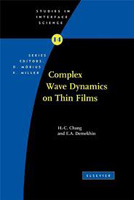

See full list of publications at:

Total citations: >20,000
h-index: 79
i-10 index: 266

Or filter by type:
See full list of publications at:
Total citations: >20,000
h-index: 79
i-10 index: 266
Or filter by type:
Extracellular Vesicle Diagnostics
| Cheng, C. H., Yatsuda, H., Liu, S. H., Tsai, W. N., Cheng, T. S., Chen, S. Y., Huang, C. Y. F., Chang, H. C., and Kondoh, J.*, “An Approach for Measuring Extracellular Vesicle Size Using the Attenuation-Velocity Change Ratio of SH-SAW Biosensors”, Analytical Chemistry, 97: 15234–15243 (2025). (pdf) |
| Safavi-Sohi, R., Johnson, J., Liu, Y., Yang, J., Hilliard, T. S., Wang, Z., Barile, C., Mijares, J., Wang, C., Chang, H. C., Whelan, R. J.*, Stack, M. S.* "Peritoneal cavity-derived small extracellular vesicles from aged tumor-naïve hosts promote ovarian cancer adhesion and invasion", Cell Communication and Signaling, 23:308 (2025). (pdf) |
| Sharma, H., Yadav, V., Burchett, A., Shi, T., Senapati, S., Datta, M. and Chang, H. C., “A Mem-dELISA Platform for Dual Color and Ultrasensitive Digital Detection of Colocalized Proteins on Extracellular Vesicles”, Biosensors and Bioelectronics, 267: 116848 (2025). (doi) |
| Ren, X., Zhou, R., Ronan, G., Ozcebe, S. G., Ji, J., Senapati, S., March, K. L., Handberg, E., Anderson, D., Pepine, C. J., Chang, H. C., Liu, F. and Zorlutuna, P., “Towards Real-Time Myocardial Infarction Diagnosis: A Convergence of Machine Learning and Ion-Exchange Membrane Technologies Leveraging miRNA Signatures”, Lab on a Chip, 24: 5203 (2024). (pdf) |
| Kumar, S., Senapati, S. and Chang, H.-C., “Extracellular Vesicle and Lipoprotein Diagnostics (ExoLP-Dx) with Membrane Sensor: A robust microfluidic platform to overcome heterogeneity”, Biomicrofluidics, 18: 041301 (2024). (pdf) |
| Maniya, N., Kumar, S., Franklin, J., Higginbotham, J., Scott, A., Gan, H., Coffey, R., Senapati, S.*, & Chang, H. C.* "An anion exchange membrane sensor detects EGFR and its activity state in plasma CD63 extracellular vesicles from patients with glioblastoma". Communications Biology 7 , 677 (2024). (pdf) |
| Zhang, Y., Zhu, Y., Kim, G., Wang, C., Zhu, R., Lu, X., Chang, H. C.* & Wang, Y.* "Chiral Graphene Quantum Dots Enhanced Drug Loading into Small Extracellular Vesicles". ACS Nano 17 , 10191-20205 (2023). (pdf) |
| Sharma, H., Yadav, V., D'Souza-Schorey, C., Go, D., Senapati, S. & Chang, H. C. "A Scalable High-Throughput Isoelectric Fractionation Platform for Extracellular Nanocarriers: Comprehensive and Bias-Free Isolation of Ribonucleoproteins from Plasma, Urine, and Saliva". ACS Nano 17 , 10, 9388-9404 (2023). (pdf) |
| Kumar, S., Maniya, N., Wang, C., Senapati, S. & Chang, H. C. "Quantifying PON1 on HDL with nanoparticle- gated electrokinetic membrane sensor for accurate cardiovascular risk assessment". Nature Communications 14 , 557 (2023). (pdf) |
| McCarthy, K. P., Go, D. B., Senapati, S. & Chang, H. C. "An integrated ion-exchange membrane-based microfluidic device for irreversible dissociation and quantification of miRNA from ribonucleoproteins". Lab on a Chip 23, 285-294 (2023). (pdf) |
| Zhang, C., Huo, X., Zhu, Y., Higgibotham, J.N., Cao, Z., Lu, X., Franklin, J.L., Vickers, K.C., Coffey, R.J., Senapati, S., Wang, C. & Chang, H. C. , “Electrodeposited magnetic nanoporous membrane for high-yield and high-throughput immunocapture of extracellular vesicles and lipoproteins”, Communications Biology, 5:1358 (2022). (pdf) |
| Ellis, B.W., Ronan, G., Ren, X., Bahcecioglu,G., Senapati, S., Anderson, D., Handberg, E., March, K.L., Chang, H. C. & Zortuluna, P. "Human Heart Anoxia and Reperfusion Tissue (HEART) Model for the Rapid Study of Exosome Bound miRNA Expression As Biomarkers for Myocardial Infarction". Small , 2201330 (2022). (pdf) |
| Li, D., Wang, C., Ni, Y., Liu, Y., Wang, W., Zhang, S., Chang, H. C. &Senapati, S. "Development of a Multi-target Protein Biomarker Assay for Circulating Tumor Cells ". Methods in Molecular Biology , 2394 (2022). (doi) |
| Ren, X., Ellis, B.W., Ronan, G., Blood, S.R., DeShetler,C., Senapati, S., March, K.L., Handberg, E., Anderson, D., Pepine, C., Chang, H. C. &Zortuluna, P. "A multiplexed ion-exchange membrane-based miRNA (MIX·miR) detection platform for rapid diagnosis of myocardial infarction". Lab on a Chip. , 21, ,3876 (2021). (pdf) |
Electrokinetics & Biosensing
| Huang, C. K., Lin, Y. N., Huang, W. S., Senapati, S., Chang, H. C., Sun, Y. M., &Huang, L. F. "RNA-based detection of genetically modified plants via current-voltage characteristic measurement". Journal of Biotechnology, 383, 27–38 (2024). (pdf) |
| Sensale, S., Ramshani, Z., Senapati, S., &Chang, H. C. "Universal Features of Non-equilibrium Ionic Currents through Perm-Selective Membranes: Gating by Charged Nanoparticles/Macromolecules for Robust Biosensing Applications". The Journal of Physical Chemistry B. , 1251906 (2021). (pdf) |
| Chuang, J. N., Diao, P. Y., Huang, W. S., Huang, L. F., Senapati, S., Chang, H. C., &Sun, Y. M. "Novel Homogeneous Anion Exchange Membranes for Reproducible and Sensitive Nucleic Acid Detection via Current–Voltage Characteristic Measurement". ACS Applied Materials &Interfaces, 12, 49 , 54459–54472 (2020). (pdf) |
| Yin, Z., Ramshani, Z., Waggoner, J. J., Pinsky, B. A., Senapati, S., &Chang, H. C. "A Non-Optical Multiplexed PCR Diagnostic Platform for Serotype-Specific Detection of Dengue Virus.", Sensors and Actuators B: Chemical, 310, 127854 (2020). (pdf) |
| Zhang, C., Sun, G., Senapati, S., &Chang, H. C. "A bifurcated continuous field-flow fractionation (BCFFF) chip for high-yield and high-throughput nucleic acid extraction and purification.", Lab Chip, 19, 3853 (2019). (pdf) |
| Ramshani, Z., Zhang, C., Richards, K., Chen, L., Xu, G., Stiles, B., Hill, R., Senapati, S., Go, D. and Chang, H. C. "Extracellular vesicle microRNA quantification from plasma using an integrated microfluidic device.", Communications Biology , 2(1), 189. (2019). (pdf) (Press Release) |
| Pan, Z., Men, Y., Senapati, S., and Chang, H. C. "Immersed AC electrospray (iACE) for monodispersed aqueous droplet generation.", Biomicrofluidics, 12, 044113 (2018). (pdf) (Editor's pick) |
| Marczak, S., Richards, K., Ramshani, Z., Smith, E., Senapati, S., Hill, R., Go, D.B. and Chang, H. C. "Simultaneous isolation and preconcentration of exosomes by ion concentration polarization.", Electrophoresis, 39, 2029 (2018). (pdf) |
| Marczak, S., Smith, E., Senapati, S., &Chang, H. C. "Selectivity Enhancements in Gel‐Based DNA‐Nanoparticle Assays by Membrane‐Induced Isotachophoresis: Thermodynamics Versus Kinetics." , Electrophoresis, 38, 2592 (2017). (pdf) |
| Shah S, Senapati S, Klacsmann F, Miller D, Johnson J, Chang HC, Stack M. Current technologies and recent developments for screening of HPV-associated cervical and oropharyngeal cancers. Cancers., Sep;8(9):85. (2016). (pdf) |
| Sun, G., Pan, Z., Senapati, S., &Chang, H. C. "Concentration-Gradient Stabilization with Segregated Counter-and Co-Ion Paths: A Quasistationary Depletion Front for Robust Molecular Isolation or Concentration.", Physical Review Applied, 7, 064024(2017). (pdf) |
| Li, D., Wang, C., Sun, G., Senapati, S., &Chang, H. C. "A Shear-Enhanced CNT-Assembly NanoSensor Platform for Ultra-Sensitive and Selective Protein Detection.", Biosensors and Bioelectronics, 97, 143(2017). (pdf) |
| Marczak, S., Senapati, S., Slouka, Z., &Chang, H. C., “Induced nanoparticle aggregation for short nucleic acid quantification by depletion isotachophoresis”, Biosensors and Bioelectronics, 86, 840(2016). (pdf) |
| Sun, G., Senapati, S. and Chang, H. C., “High-flux ionic diodes, ionic transistors and ionic amplifiers based on external ion concentration polarization by an ion exchange membrane: a new scalable ionic circuit platform”, Lab on a Chip, 16, 1171(2016). (pdf) (Cover article) |
| Slouka, Z., Senapati, S., Shah, S., Lawler, R., Shi, Z., Stack, M. S., &Chang, H. C., "Integrated, DC voltage-driven nucleic acid diagnostic platform for real sample analysis: Detection of oral cancer", Talanta, 145, 35(2015). (pdf) |
| Taller, D., Richards, K., Slouka, Z., Senapati, S., Hill, R., Go, D. B., &Chang, H. C. "On-chip surface acoustic wave lysis and ion-exchange nanomembrane detection of exosomal RNA for pancreatic cancer study and diagnosis ", Lab on a Chip, 15, 1656(2015). (pdf) (Cover article) |
| O'Neil, P.F., Ben Azouz, A., Vazquez, M., Liu, J., Marczak, S., Slouka, Z., Chang, H. C., Diamond, D. and Brabazon, D. " Advances in Three-Dimensional Rapid Prototyping of Microfluidic Devices for Biological Applications", Biomicrofluidics, 8, 052112(2014). (pdf) |
| Cheng, L. J. and Chang, H. C., "Switchable pH Actuators and 3D Integrated Salt Bridges as New Strategies for Reconfigurable Microfluidic Free-Flow Electrophoretic Separation", LabChip,14, 979 (2014). (pdf) |
| Senapati, S., Slouka, S., Shah, S. S., Behura, S. K., Shi, Z., Stack, M. S., Severson, D. W. and Chang, H. C., "An Ion-Exchange Nanomembrane Sensor for Detection of Nucleic Acids Using a Surface Charge Inversion Phenomenon", Biosensors and Bioelectronics, 60, 92-100 (2014). (pdf) |
| Chen, H. P., Tsai, C. C., Lee, H. M., Wang, S.-C. and Chang, H. C. “Selective Dynamic Concentration of Peptides at Poles of Cation-Selective Nanoporous Granules”, Biomicrofluidics, 7 , 044110 (2013). (pdf) |
| Slouka, Z., Senapati, S., Yan, Y. and Chang, H. C., "Charge Inversion, Water Splitting, and Vortex Suppression due to DNA Sorption on Ion-Selective Membranes and Their Ion-Current Signatures", Langmuir, 29, 8275-8283 (2013). (pdf) |
| Taller, D., Go, D. N. and Chang, H. C., "Modulated Exponential Films Generated by Surface Acoustic Waves and Their Role in Liquid Wicking and Aerosolization at a Pinned Drop", Physical Rev E, 87, 053004-6(2013). (pdf) |
| Conroy, D. T., Craster, R. V., Matar, O. K. and Chang, H. C., "Nonequilibrium Hysteresis and Wien Effect Water Dissociation at a Bipolar Membrane", Phys Rev E., 86, 056104 (2012). (pdf) |
| Chang, H. C., Demekhin, E. A. and Shelistov, V. S., "Competition Between Dukhin's and Rubinstein's Electrokinetic Modes", Phys Rev E, 86, 046319(2012). |
| Wang, Y., Tan, M. K., Go, D. B. and Chang, H. C., "Electrospray Cone-Jet Breakup and Droplet Production for Electrolyte Solutions", Europhys Lett, 99, 64003 (2012). (pdf) |
| Taller, D., Go, D. N. and Chang, H. C., "Self-Similar Micron-Size and Nanosize Drops of Liquid Generated by Surface Acoustic Waves", Phys Rev Lett, 109, 224301(2012). (pdf) |
| Cheng, L. J. and Chang, H. C., "Microscale pH Regulation by Water Splitting", Biomicrofluidics, 5, 046502 (2011). (pdf) |
| Chetwani, N., Cassou, C. A., Go, D. B. and Chang, H. C., "Frequency Dependence of Alternating Current Electrospray Ionization Mass Spectrometry", Analytical Chemistry, 83, 3017 (2011). (pdf) |
| Ho, J., Tan, M. K., Go, D. B., Friend, J. R. and Chang, H. C., "A Paper-Based Microfluidic Surfae Acoustic Wave Sample Delivery and Ionization Source for Rapid and Sensitive Ambient Mass Spectrometry", Analytical Chemistry , 83, 3260-3266 (2011). (accelerated article) (pdf) |
| Mahon, A. R., Barnes, M.A., Senapati, S., Feder, J., Chang, H. C. and Lodge, D. M., "Molecular Detection of Invasive Species in Heterogeneous Mixtures using a Microfluidic Carbon Nanotube Platform", PLOS One, 6, 17280 (2011). (pdf) |
| Kuczenski, R. S., Chang, H.-C. and Revzin, R., "Dielectrophoretic Microfluidic Device for the Continuous Sorting of E. Coli from Blood Cells", Biomicrofluidics, 5, 032005(2011). (pdf) |
| Gagnon, Z., Mazur, J. and Chang, H.-C., "Integrated AC Electrokinetic Cell Separation in a Closed-Loop Device", Lab-on-a-Chip, 10, 718-726(2010). (pdf) |
| Liu, H.J., Wei, H.-H., Hwang, S.-H. and Chang, H.-C., "Dynamic Particle Trapping, Release and Sorting by Microvortices", Phys Rev E, 82, 026308 (2010). (pdf) |
| Chetwani, N., Cassou, C. A., Go, D. B. and Chang, H.-C., "High-Frequency AC Electrospray Ionization for Mass Spectrometry of Biomolecules", J Am Soc Mass Spect, 21, 1852(2010). (pdf) |
| Cheng, I.-F., Senapati, S., Cheng, S.,Basuray, S., Chang, H.-C. and Chang, H.-C., "A Rapid Field-Use Assay for Mismatch Number and Location of Hybridized DNAs", Lab-on-a-Chip, 10, 828-831(2010).(pdf) |
| Wang, S., Chang, H.-C. and Zhu, Y., "Hysteretic Conformational Transition of Single Flexible Polyelectrolyte under Resonant AC Electric Polarization", Macromolecules, 43, 7402-7405(2010). (pdf) |
| Moon, S., Zhang, Q., Huang, D., Senapati, S., Chang, H. C., Lee, E., &Luo, T. , “Biocompatible Direct Deposition of Functionalized Nanoparticles Using Shrinking Surface Plasmonic Bubble”, Advanced Materials Interfaces, 2000597 (2020). (pdf) |
| Zhang, Q., Pang, Y., Schiffbauer, J., Jemcov, A., Chang, H.-C., Lee, E. and Luo, T. , “Light-Guided Surface Bubble Movement via Contact-Line depinning by in-situ Deposited Nanoparticle Heating”, ACS Applied Materials and Interfaces, 11(51), 48525 (2019). (pdf) |
| Wang, Y., T.-C. Chang, Stoddart, P. R. and Chang, H.-C., "Diffraction-Limited Ultrasensitive Molecular Nano-Arrays with Singular Nanocone Scattering", Biomicrofluidics, 8, 021101 (2014). (pdf)(Supplementary Materials) |
| Wang, Y., Senapati, S., Stoddart, P., Howard, S. and Chang, H.C. "Nano-cone optical fiber array sensors for MiRNA profiling." Proc. SPIE 8812, Biosensing and Nanomedicine VI , 88120Q, (2013). (pdf) |
| Liu, S., Yan, Y., Wang, Y., Senapati, S. and Chang, H.-C., "Plasmonic Hotspots of Dynamically Assembled Nanoparticles in Nanocapillaries: Towards a miRNA Profiling Platform", Biomicrofluidics, 7, 061102(2013). (pdf) (Supplementary Materials) |
| Wang, Y. , Plouraboue, F. and Chang, H.-C., "Broadband Converging Plasmon Resonance at a Conicap Nanotip", Optical Express, 21, 6609(2013) (pdf) |
Single-Molecule Dynamics and Detection
| Chen, L., Zhang, C., Yadav, V., Wong, A., Senapati, S., & Chang, H. C. "A home‑made pipette droplet microfluidics rapid prototyping and training kit for digital PCR, microorganism/cell encapsulation and controlled microgel synthesis". Scientific Reports, 13:184 (2023) (pdf) |
| Zhang, Y., Chen, X., Wang, C., Chang, H. C., & Guan, X. "Nanoparticle-assisted detection of nucleic acids in a polymeric nanopore with a large pore size". Biosensors and Bioelectronics, 196, 113697 (2022) (pdf) |
| Chen, L., Yadav, V., Zhang, C., Huo, X., Wang, C., Senapati, S., &Chang, H. C. "Elliptical Pipette Generated Large Microdroplets for POC Visual ddPCR Quantification of Low Viral Load". Analytical Chemistry. , 93, 16, 6456–6462 (2021) (pdf) |
| Wang, C., Sensale, S., Pan, Z., Senapati, S., & Chang, H. C. "Slowing Down DNA Translocation through Solid-State Nanopores by Edge-Field Leakage". Nature Communications, 12, 140 (2021) (pdf) |
| Zhang, Y., Chen, X., Wang, C., Roozbahani, G. M., Chang, H. C., &Guan, X. "Chemically functionalized conical PET nanopore for protein detection at the single-molecule level". Biosensors and Bioelectronics, 112289. (2020) (pdf) |
| Sensale, S., Wang, C., & Chang, H. C. "Resistive amplitude fingerprints during translocation of linear molecules through charged solid-state nanopores". The Journal of Chemical Physics, 153(3), 035102. (2020). (pdf) |
| Sensale, S., Peng, Z., Chang H C. , "Biphasic signals during nanopore translocation of DNA and nanoparticles due to strong ion cloud deformation", Nanoscale, 11(47), 22772-22779 (2019). (pdf) |
| Sensale, S., Peng, Z., and Chang, H. C., "Acceleration of DNA melting kinetics using alternating electric fields", The Journal of Chemical Physics, 149, 085102 (2018) (pdf) |
| Sensale, S., Peng, Z., and Chang, H. C., "Kinetic theory for DNA melting with vibrational entropy", The Journal of Chemical Physics, 147, 135101 (2017) (pdf) |
| Hsiao, P.-Y., Wei, Y.-F. and Chang, H. C., "Unfolding Collapsed Polyelectrolytes in Alternating-Current Electric Fields" , Soft Matter, 7, 1207 (2011). (pdf) |
| Wang, S., Chang, H. C. and Zhu, Y., "Hysteretic Conformational Transition of Single Flexible Polyelectrolyte under Resonant AC Electric Polarization", Macromolecules, 43, 7402-7405(2010). (pdf) |
| Dubrovski, O., Yang, J., Veloso, F., Go, D. B.*, Chang, H. C.* and Rumbach, P.*, “Non-Capillary Wave Dynamics due to Interfacial Coupling with Plasma Patterns at a Liquid Surface”, Physical Review Letters, 133: 105301 (2024). (Editor’s Suggestion) (pdf) |
| Ren, X., Gomez, J., Bashar, M.K., Ji, J., Can, U.I., Chang, H.C., Shukla,N., Datta, S., and Zorlutuna, P., "Cardiac Muscle Cell-Based Coupled Oscillator Network for Collective Computing", Advanced Intelligent Systems, 2000253. (2021). (pdf) |
| Pan, Z., Bui, L., Yadav, V., Fan, F., Chang, H. C., & Hanjaya-Putra, D., "Conformal single cell hydrogel coating with electrically induced tip streaming of an AC cone", Biomaterials Science, 9, 3284-3292. (2021). (pdf) |
| Zhang, Q., Li, S., Wang, C., Chang, H. C., &Guo, R., "Carbon nanotube-based mixed-matrix membranes with supramolecularly engineered interface for enhanced gas separation performance", Journal of Membrane Science, 598, 117794. (2020). (pdf) |
| Pan Z, Chang H C. , "Far-field sensitivity of droplet generation: Exponential scaling and cutoff", Physical Review Fluids, 4(10), 101701 (2019). (pdf) |
| Pan, Z., Wang, C., Li, M., and Chang, H. C., "Universal Scaling of Robust Thermal Hot Spot and Ionic Current Enhancement by Focused Ohmic Heating in a Conic Nanopore", Phys Rev Lett, 117, 134301 (2016). (pdf) |
| Yan, Y., Wang, Y., Senapati, S., Schiffbauer, J., Yossifon, G., and Chang, H. C. "Robust ion current oscillations under a steady electric field: An ion channel analog." Physical Review E 94 022613(2016).(pdf) |
| Rosentsvit, L., Wang, W., Schiffbauer, J., Chang, H. C. and Yossifon, G., "Ion Current Rectification in Funnel-Shaped Nanochannels: Hysteresis and Inversion Effects", J Chem Phys, 143, 224706 (2015). (pdf) |
| Yan, Y., Schiffbauer, J., Yossifon, G., and Chang, H. C., "Universal low-frequency asymptotes of dynamic conic nanopore rectification: An ionic nanofluidic inductor", J Chem Phys, 143, 224705 (2015). (pdf) |
| Sun, G., Slouka, Z., and Chang, H. C., "Fluidic‐Based Ion Memristors and Ionic Latches", Small, 11, 5206-5213 (2015). (pdf) |
| Rajesh, S., Yan, Y., Chang, H.-C., Gao, H., and Phillip, W. A, "Mixed Mosaic Membranes Prepared by Layer-by-Layer Assembly for Ionic Separations", ACS nano, 8, 12338–12345 (2014). (pdf) |
| Yan, Y., Sheng, Q., Wang, C., Xue, J. and Chang, H.-C., "Energy Conversion Efficiency of Nanofluidic Batteries : Hydrodynamic Slip and Access Resistance", J Phys Chem, 117, 8050-8061 (2013). (pdf) |
| Yan, Y., Wang, L., Xue, J. and Chang, H.-C., "Ion Current Rectification Inversion in Conic Nanopores: Non-Equilibrium Ion Transport Biased by Ion Selectivity and Spatial Asymmetry", J Chem Phys, 138, 044706 (2013) (pdf) |
| Yossifon, G., Mushenheim, P and Chang, H.-C., "Controlling Nanoslot Overlimiting Current with the Depth of a Connecting Microchamber", Europhys Lett, 90, 64004(2010) (pdf) |
| Yossifon, G. and Chang, H.-C., "Changing Nanoslot Ion Flux with a Dynamic Nanocolloid Ion-Selective Filter: Secondary Overlimiting Currents due to Nanocolloid-Nanoslot Interaction", Phys Rev E, 81, 066317 (2010) (pdf) |
| Yossifon, G., Mushenheim P., Chang, Y.-C. and Chang, H.-C., "Eliminating the Limiting-Current Phenomenon by Geometric Field Focusing into Nanopores and Nanoslots", Phys Rev E, 81, 046301 (2010) (pdf) |
| Basuray, S., Wei, H.-H. and Chang, H.-C., "Dynamic Double-Layer Effects on AC-Induced Dipoles of Dielectric Nanocolloids", Biomicrofluidics, 4, 022801 (2010). (link) |
| Basuray, S. and Chang, H.-C., "Designing a Sensitive and Quantifiable Nanocolloid Assay with Dielectrophoretic Cross-Over Frequency", Biomicrofluidics, 4, 013205 (2010). (link) |
| Montes, D., Saha, S., Taglione, A., Jeong, D. P., Chen, L., Fan, F., Chang, H.-C.* and Hanjaya-Putra, D*.; “Tuning the Morphological Properties of Granular Hydrogels to Control Lymphatic Capillary Formation”, Advanced Materials Interfaces, 2401037 (2025). (Cover Article)(pdf) |
| Johnston, J., Jeon, H., Choi, Y. Y., Kim, G., Shi, T., Khong, C., Chang, H.-C., Myung, N. C. and Wang, Y., “Stimulative Piezoelectric Nanofibrous Scaffolds for Enhanced Small Extracellular Vesicle Production in 3D Cultures”, Biomaterials Science, 12:5278 (2024).(pdf) |
| Jeong, D.P., Montes, D, Chang, H.C. & Hanjaya-Putra, D., "Fractal dimension to characterize interactions between blood and lymphatic endothelial cells", Physical Biology, 20, 045004. (2023). (pdf) |
| Yadav, V., Senapati, S. &Chang, H. C. "Ion-Depleting Action of Perm-Selective Membranes for Enhancing Electrical Communication and Gated Ion Channel Activity in Cell Cultures". ACS Biomater. Sci. Eng. , 8, ,11 (2022). (pdf) |
| Ramshani, Z., Fan, F., Wei, A., Romanello-Giroud-Joaquim, M., Gil, C.-H., George, M., Yoder, M. C., Hanjaya-Putra, D., Senapati, S., &Chang, H.-C. "A multiplexed immuno-sensor for on-line and automated monitoring of tissue culture protein biomarkers". Talanta, 225 , 122021 (2021). (pdf) |
| Yadav, V., Chong, N., Ellis, B., Ren, X., Senapati, S., Chang, H. C., &Zorlutuna, P. "Constant-potential environment for activating and synchronizing cardiomyocyte colonies with on-chip ion-depleting perm-selective membranes". Lab on a Chip, 20(22), 4273-4284 (2020). (pdf) |
| Wang, C., Senapati, S., &Chang, H.-C., "Liquid biopsy technologies based on membrane microfluidics: High-yield purification and selective quantification of biomarkers in nanocarriers.", Electrophoresis, 41(21–22), 1878–1892 (2020) (pdf) |
| Ghosal, S., Sherwood, J. and Chang, H.C., "Solid-state nanopore hydrodynamics and transport", Biomicrofluidics, 13, 011301 (2019) (pdf) |
| Go, D. B., Atashbar, M., Ramshani, Z., and Chang, H.-C. "Surface acoustic wave devices for chemical sensing and microfluidics: A review and perspective." Analytical Methods, 9, 412 (2017) (pdf) |
| Shah, S.S., Senapati, S., Klacsmann, F., Miller, D.L., Johnson, J.J., Chang, H.-C., Stack, M.S., "Current Technologies and Recent Developments for Screening of HPV-Associated Cervical and Oropharyngeal Cancers", Cancers, 8, (2016) (pdf) |
| Egatz-Gomez, A., Wang, C., Klacsmann, F., Pan, Z., Marczak, S., Wang, Y., Sun, G., Senapati, S. and Chang, H.C., "Future microfluidic and nanofluidic modular platforms for nucleic acid liquid biopsy in precision medicine", Biomicrofluidics, 10, 032902 (2016) (pdf) |
| Slouka, Z., Senapati, S. and Chang, H.-C., "Microfluidic Systems with Ion-Selective Membranes", Annual Review of Analytical Chemistry, 7, 317 (2014) (pdf) |
| Wang, Y., Cheng, X. and Chang, H.-C., "Celebrating Singularities: Mathematics and Chemical Engineering", AIChE J, 59. 1830-43 (2013). (pdf) |
| Revzin, A., Maverakis, E. and Chang, H.-C., "Biosensors for Immune Cell Analysis---A Perspective", Biomicrofluidcs, 6, 021301 (2012). (pdf) |
| Chang, H.-C., Yossifon, Y. and Demekhin, E. A., "Nanoscale Electrokinetics and Microvortices: How Hydrodynamics Affects Nanofluidic Ion Flux", Annual Review of Fluid Mechanics, 44, 401-426(2012). (pdf) |
| Senapati, S., Basuray, S., Slouka, Z., Cheng, L.-J. and Chang, H.-C., "A Nanomembrane-Based Nucleic Acid Sensing Platform for Portable Diagnostics", Topics in Current Chemistry, 304, 153-170 (2011). (pdf) |
| Yeo, L. Y., Chang, H.-C., Chan, P. P. Y. and Friend, J. R. , "Microfluidic Devices for Bioapplications", Small, 7, 12 (2011) (pdf) |
| Maheshwari, S., Chetwani, N. and Chang, H.-C., "Alternating Current Electrospraying", Ind. Eng. Chem. Res., 48, 9358 (2009). (pdf) |
| Chang, H.-C. and Yossifon, G., "Understanding Electrokineitcs at the Nanoscale--a Perspective", Biomicrofluidics, 3, 012001 (2009) (pdf) |
| Chang, H.-C., " Rapid and Portable Genetic Identification Kits for World Health Care Applications", Feature Article, Chinese American Chemical Society Communications, Summer Issue (2008). (pdf) |
| Sengupta, S., Gordon, J. E. and Chang, H.-C., "Microfluidic Diagnostic Systems for the Rapid Detection and Quantification of Pathogens", Chap 9 of "Microfluidics for Biological Applications",Editors: W-C Tien and E. Finehout, Springer (2008) (pdf) |
| Chang, H.-C., "Nanobead Electrokinetics: The Enabling Microfluidic Platform for Rapid Multi-Target Detection" AIChE J., 53, 2486(2007) (pdf) |
| Chang, H.-C., " Electrokinetics: A Viable Micro-fluidic Platform for Miniature Diagnostic Kits", Canadian J of Chemical Engineering, 84, 1(2006). (pdf) |
| Yeo, L. and Chang, H.-C., "Static and Spontaneous Electrowetting", Modern Phys Lett. B ,19 ,549 (2005). (pdf) |
| Chang, H.-C., "Wave Evolution on a Falling Film", Annual Review of Fluid Mechanics, 26, 103-136 (1994). (pdf) |
| "Complex Wave Dynamics on Thin Films", H-C Chang and E A Demehkin, Elsevier (2002)(link) |
| "Electrokinetically Driven Microfluidics and Nanofluidics", H-C Chang and L Yeo, Cambridge Press(2009)(link) |
|  |
| Yossifon, G., Chang, Y.-C. and Chang, H.-C., "Rectification, Gating Voltage and Interchannel Communication due to Asymmetric Entrance Space Charge Polarization", Phys Rev Lett., 103, 154502(2009).(pdf) |
| Yossifon, G., Mushenheim, P., Chang, Y-C. and Chang, H.-C.,"Nonlinear Current-Voltage Characteristics of Nanochannels" Phys Rev E, 79, 046305 (2009). (pdf) |
| S. Senapati, A. R. Mahon, J. Gordon, C. Nowak, S. Sengupta, T. H. W. Powell, J. Feder, D. M. Lodge and Chang, H.-C., "Rapid on-chip Genetic Detection Microfluidic Platform for Real World Applications", Biomicrofluidics, 3, 022407(2009).(pdf) |
| Basuray,S., Senapati,S., Aijian, A., Mahon, A.R. and Chang, H.-C., "Shear and AC Field Enhanced Carbon Nanotube Impedance Assay for Rapid, Sensitive and Mismatch-Discriminating DNA Hybridization", ACS Nano, 3, 1823 (2009).(pdf) |
| Cheng, X., Basuray, S., Senapati, S. and Chang, H.-C., "Identification and Separation of DNA Hybridized Nanocolloids by Taylor Cone Harmonics", Electrophoresis, 30, 3236 (2009). (pdf) |
| F. Plouraboue and Chang, H.-C., "Symmetry Breaking and Electrostatic Attraction Between Two Identical Surfaces", Phys. Rev. E, 79, 041404(2009). (pdf) |
| Maheshwari, S. and Chang, H.-C."Assembly of multi-stranded nanofiber threads through ac electrospinning", Adv Mater., 21,349354(2009). (pdf) |
| Cheng, X. and Chang, H.-C. "Universal nanocolloid deposition patterns: can you see the harmonics of a Taylor cone ?", New J of Physics, 11, 075023(2009) (pdf) |
| Gagnon, Z. and Chang, H.-C., "Electrothermal ac Electro-osmosis", Applied Phys Lett., 94, 024101(2009) (pdf) |
| Gagnon, Z., Mazur, J. and Chang, H.-C., "Glutaraldehyde Enhanced Dielectrophoretic Yeast Cell Separation", Biomicrofluidics, 3, 044108 (2009). (link) |
| Berrouche, Y., Avenas, Y., Schaeffer, C., Chang, H.-C. and Wang, P., "Design of a Porous Electro-osmotic Pump Used in Power Electronic Cooling", IEEE Trans on Industry App., 45, 2073(2009) (pdf) |
| Cheng, I-F., Froude, V. E., Zhu, Y., Chang, H.-C. and Chang, H.-C., "A Continuous High-Throughput Bioparticle Sorter Based on 3D Traveling-Wave Dielectrophoresis", Lab-on-a-Chip, 9, 3193 (2009). (pdf) |
| Yossifon, G. and Chang, H.-C., "Selection of Nonequilibrium Overlimiting Currents: Universal Depletion Layer Formation Dynamics and Vortex Instability", Phys. Rev. Lett,101, 254501(2008). (pdf) |
| Kreft, J., Chen, Y.-L. and Chang, H.-C., "Conformation and Trapping Rate of DNA at aConvergent Stagnant Flow", Phys Rev E.,77, 030801(R) (2008). (pdf) |
| Wang, S.-C., Wei, H.-H., Chen, H.-P., Tsai, M.-H., Yu, C.-C, and Chang, H.-C., "Dynamic Superconcentration at Critical Point Double-layer Gates of Conducting Nanoporous Granules due to Asymmetric Tangential Fluxes" Biomicrofluidics , 2 , 014012 (2008). (pdf) |
| Hou, D. and Chang, H.-C., "AC Field-Enhanced Protein Crystallization", Applied Phys Lett, 92, 223902 (2008) (pdf) |
| Maheshwari, S., Zhang, L., Y. Zhu and Chang, H.-C., " Coupling between Precipitation an Contact-line Dynamics: Multi-ring Stains and Stick-Slip Motion", Phys Rev Lett , 100 , 044503 (2008). (pdf) |
| Gagnon, Z. and Chang, H.-C., "Dielectrophoresis of Ionized Gas Microbubbles: Dipole Reversal due to Diffusive Double Layer Polarization", Applied Phys Lett, 93, 224101(2008). (pdf) |
| Gagnon, Z., Senapati, S., Gordon, J. and Chang, H.-C., "Dielectrophoretic Detection and Quantification of Hybridized DNA Molecules on Nano-Genetic Beads", Electrophoresis, 29, 4808 (2008). (pdf) |
| Gagnon, Z., Gordon, J., Sengupta, S. and Chang, H.-C., "Bovine Red Blood Cell Starvation Age Discriminatin through a Glutaraldehyde Amplified Dielectrophoretic Approach with Buffer Selection and Membrane Cross-Linking", Electrophoresis , 29 , 2272 (2008). (pdf) |
| Chetwani, N., Maheshwari, S. and Chang, H.-C."Universal cone angle of ac electrosprays due to net charge entrainment", Phys Rev Lett, 101, 204501(2008). (pdf) |
| Cheng, I-F.,Chang, H.-C., Hou, D. and Chang, H.-C., "An Integrated Dielectrophoretic Chip for Continuous Bioparticle Filtering, Focusing, Trapping and Detecting", Biomicrofluidics, 1, 021503(2007). (link) |
| Hou, D., Maheshwari, M. and Chang, H.-C., "Rapid Bioparticle Concentration and Detection by Combining a Discharge Driven Vortex with Surface Enhanced Raman Scattering", Biomicrofluidics, 1, 014016(2007). (pdf) |
| Zhou, R., Chang, H.-C., Protasenko, V., Kuno, M., Singh, A. K. and Jena, D., ""CdSe Nanowires with Illumination Enhanced Conducitivity: Induced Dipoles, DielectrophoreticAssembly and Field-Sensitive Assembly", J App Phys , 101 , 073704(2007). (pdf) |
| Basuray, S. and Chang, H.-C., "Induced Dipoles and Dielectrophoresis of Nano-Colloids in Electrolytes", Phys Rev E., 75, 060501-060504(2007). (pdf) |
| Gordon, J. E., Gagnon, Z. and Chang, H.-C., "Dielectrophoretic Discrimination of Bovine Red Blood Cell Starvation Age by Buffer Selection and Membrane Cross-linking", Biomicrofluidics , 1 , 044102 (2007). (pdf) |
| Maheshwari, S. and Chang, H.-C., "Effects of bulk charge and momentum relaxation times on ac electrospraying". J. App. Phys., 102,034902(2007). (pdf) |
| Chen, Z., Bogess, B. and Chang, H.-C., "Open-tubular Capillary Electrochromatography Mass Spectrometry with Sheathless Nanoflow Electrospray Ionization for the Analysis ofAmino Acids and Peptides", J of Mass Spectrometry , 42 , 244-253 (2007). |
| Chen, Z., Hsu, F.-C.,Battigelli, D. and Chang, H.-C., "Capture and release of viruses using amino functionalized silica particles",Anal. Chim. Acta, 569, 76-82(2006). (pdf) |
| Yeo, L. Y., Hou, D., Maheshwari, S. and Chang, H.-C., "Electrohydrodynamic surface microvortices for mixing and particle trapping", Appl. Phys. Lett., 88 , 233512 (2006). (pdf) |
| Maheshwari, S. and Chang, H.-C., " Anomalous conical menisci under an ac field-departure from the dc Taylor cone", App Phys Lett, 89, 234103(2006). (pdf) |
| Wang, P., Maheshwari, S. and Chang, H-C, "Polyhedra formation and transient cone ejection of a resonant microdrop forced by an ac electric field", Phys Rev Lett, 96, 254502 (2006)(pdf) |
| Wang, P., Chen, Z. and Chang, H.-C., "An integrated micropump and electrospray emitter system based on porous silica monoliths", Electrophoresis , 27 , 3964 (2006). (pdf) |
| Hou, D. and Chang, H.-C., "Electrokinetic particle aggregation patterns in microvorticesdue to particle-field interaction", Phys. of Fluids , 18 , 071702 (2006). (pdf) |
| Sengupta, S, Battigelli, D. A. and Chang, H.-C., "A micro-scale multi-frequency reactance measurment technique to detect bacterial growth at low-bioparticle concentrations", Lab-on-a-Chip , 6 ,682(2006). |
| Zhou, R., Wang, P. and Chang, H.-C., "Bacteria capture, concentration and detection by AC dielectrophoresis and self-assembly of dispersed single-wall carbon nanotubes", Electrophoresis , 27 , 1375(2006). |
| Zhou, R., Gordon, J., Palmer, A. and Chang, H.-C., "Role of Eruthrocyte Deformability During Capillary Wetting", Biotechnology and Bioengineering , 93 , 201-211(2006). |
| Yeo, L. and Chang, H.-C., "Electrowetting Films on Parallel Line Electrodes", Phys. Rev. E , 73 , 011605(2006). |
| Wang, P., Chen, Z. and Chang, H.-C., "A New Electro-Osmotic Pump Based on Silica Monoliths", Sensors and Actuators B , 113 , 500(2006). |
| Wu, J., Ben, Y. and Chang, H.-C., "Particle detection by electrical impedance spectroscopy with asymmetric-polarization ac electroosmotic trapping", Microlfuid. And Nanofluid. , 1 , 161-167(2005). |
| Gagnon, Z. and Chang, H.-C., "Aligning fast alternating current electroosmotic flow fields and characteristic frequencies with dielectrophoretic traps to achieve rapid bacteriadetection", Electrophoresis , 26 , 3725-3737(2005). |
| Yeo, L. and Chang, H.-C., "Static and Spontaneous Electrowetting", Modern Phys Lett. B , 19 ,549(2005). |
| Chen, Z., Chang, H.-C. and Hobo, T., "Application of Monolithic Silica for Microfluidic Applications", Bunseki Kagaku (Japanese Anal. Chem.) , 54 , 583(2005). |
| Zhou, R. and Chang, H.-C.,"Capillary Penetration Failure of Blood Suspensions", J of Colloid and Interfacial Sci. , 287 ,647 (2005). |
| Yeo, L., Gagnon, Z. and Chang, H.-C., "AC Electrospray Biomaterials Synthesis", Biomaterials , 26 , 6122( 2005). |
| Chen. Z.. Wang, P. and Chang, H.-C., "An Electro-osmotic Micropump based on Monolithic Silica for Micro-flow Analyses and Electrosprays", Anal. Bioanal. Chem. , 382 , 817(2005). |
| Wu, J., Ben, Y., Battigelli, D. and Chang, H.-C., "Long-Range AC Electroosmotic Trapping and Detection of Bioparticles", Ind. Eng. Chem. Res . , 44 , 2815(2005). |
| Wang S. C., Lai, Y. W. , Ben, Y . and Chang, H.-C., "Microfluidic Mixingby dc and ac Nonlinear Electrokinetic Vortices", Ind. And Eng. Fund Res . , 43 , 2902-2911 (2004). |
| Ben, Y., Demekhin, E. A. and Chang, H.-C., "Superfast Nonlinear Electrokinetics and Electrophoresis", J of Collid and Interface Sci . , 276 , 483-497 (2004). (pdf) |
| Yeo, L., Lastochkin, D., Wang, S.-C. and Chang, H.-C., "A New ac Electrospray Mechanism by Maxwell-Wagner Polarization and Capillary Resonance", Phys Rev Lett , 92 , 133902-133904 (2004). |
| Lastochkin, D., Zhou, R., Wang, P., Ben, Y. and Chang, H.-C., "Electrokinetic Micropump and Micromixer Design Based on AC Faradaic Polarization", J. of Applied Physics , 96 , 1730 (2004). |
| Kopelevich, D. I. and Chang, H.-C. "Nonequilibrium Transport in and on Condensed Matters: Effects of Lattice Vibration and Deterministic Chaos", Molecular Simulation , 30 , 159-166 (2004). |
| Minerick, A., Takhistov, P., Zhou, R. amd Chang, H.-C., " Manipulation and Characterization of Red Blood Cells with AC Fields in Micro-Devices", Electrophoresis , 24 , 3703-3717 (2003). |
| Minerick, A., Chang, H.-C., Hoagland, T. M. and Olsen, C. R. "Dynamic Synchronization of Venous Pressure-Driven Cardiac Output in Rainbow Trouts", Amer. J of Physiology , 285 , DCCCLXXXIX(2003). |
| Kopelevich, D. I. and Chang, H.-C. "Nonthermal transport of small sorbates in zeolites: Chaotic dynamics and long jumps", J. Chem. Phys . , 119 , 4573 (2003). |
| Arya, G., Ch ang, H.-C. and Maginn, E. J., "Molecular Simulations of Knudsen Wall Slips---Effect of Wall Morphology", Molecular Simulation , 29 , 697-709 (2003). |
| Balakotaiah V. and Chang, H.-C., "Hyperbolic homogenized models for thermal and solutal dispersion", SIAM J. Applied Math . , 63 (4) ,1231-1258 (2003). |
| Arya, G., Chang, H.-C. and Maginn, M. J., "Knudsen Diffusivity of a Hard Sphere in a Rough Slit Pore", Phys. Rev. Lett , 91 , 026102-1 (2003). |
| Takhistov, P., Duginova, K. and Chang, H.-C., "Electrokinetic Mixing Vortices due to Electrolyte Depletion at Microchannel Junctions", J. of Colloid and Interfacial Science , 263 , 133-143 (2003). |
| Thamida, S. and Chang, H.-C., "Nonlinear Electrokinetic Ejection and Entrainment due to Polarization at Nearly Insulated Wedges", Phys Fluids , 14 , 4315-4328(2002). |
| Veretennikov, I., Indeikina, A., Chang, H.-C., Marquez, M., Suib, S. L. and Giraldo, O., "Mechanism for Helical Gel Formation from Evaporation of Colloidal Solutions", Langmuir , 18 , 8792-8798(2002). |
| Takhistov, P. and Chang, H.-C., "Complex Stain Morphology", IEC Res , Special Issue in Honor of W. R. Scholwalter , 41, 6256-6269(2002). |
| Chang, H.-C., Demekhin, E. A. and Saprikin, S. S., "Noise-driven wave transitions on a Vertically falling film", J. Fluid Mech. , 462 , 255-284 (2002). |
| Ben, Y., Takhistov, P., Demekhin, E. A. and Chang, H.-C., "Miscible Fingering in Electrokinetic Flow" , J. of the Chinese Institute of Chemical Engineers , Festschrift issue in honor of Dr. Norman Li , 33 , No. 1, 15 (2002). |
| Ben, Y. and Chang, H.-C., "Nonlinear Smoluchowski Slip Velocity and Vortex Generation", J. Fluid Mech. , 461 , 229-238 (2002) (pdf). |
| Indeikina, A. and Chang, H.-C., "Estimate of Turbulent Eddy Diffusivity by Exact Renormalization", SIAM J App Math , 63 , 1(2002). |
| Minerick, A., Ostafin, A. and Chang, H.-C., "Electrokinetic Transport of Red Blood Cells In Microcapillaries", J. of Electrophoresis , 23 , 2165 (2002) (pdf). |
| Pacheco-Vega, A., Franco, W. , Chang, H.-C. and Sen, M. "Nonlinear Analysis of Tilted Toroidal Thermosyphon Models", International Journal of Heat and Mass Transfer , 45 , No. 7, 1379-1391 (2002). |
| Thamida, S. and Chang, H.C., "Mechanism of Nanoporous Patterning During Anodization", Chaos , 12 , 240(2002). |
| Ben, Y. and Chang, H.-C., "A Spectral Theory for Miscible Fingering", Phys of Fluids , 14 , 999(2002). |
| Takhistov, P., Indeikina A. and Chang, H.-C., "Electrokinetic displacement of air bubbles In microchannels", Phys of Fluids , 14 , 1(2002). |
| Thamida, S. K., Takhistov, P. V. and Chang, H.-C., "Fractal dewetting of a viscous film Between Separating Parallel Plates", Phys of Fluids , 13 , 2190(2001). |
| Kopelevich, D. I. and Chang, H.-C., "Diffusion of inert gases in silica sodalite : importance of lattice flexibility", J. of Chem Phys. , 115 , 9519 (2001) |
| Arya, G., Chang, H.-C. and Maginn, E. J., "A critical component of equilibrium, non- equilibrium and boundary-driven molecular dynamics techniques for studying transport in microporous material", J. of Chem Phys , 115 , 8112 (2001). |
| Chang, H.-C., "Bubble/Drop Transport in Microchannels" , pg 11-1 , "The MEMS Handbook" Editor; M. Gadelhak , CRC Press(2001). |
| Acharya, N., Sen, M. and Chang. H.-C., "Analysis of heat transfer enhancement in coiled-tube heat exchangers", International J. of Heat and Mass Transfer , 44 , 3189-3199(2001) |
| Arya, G., Maginn, E. J. and Chang, H.-C., "Effect of the Surface Energy Barrier on Sorbate Diffusion in AlPO4-5", J. Phys. Chem. , 105 , 2725(2001). |
| Keith, J. M., Chang, H.-C. and Leighton, D. T., "Designing a Fast-Iginiting Catalytic Converter System", AIChE J , 47 , 650(2001). |
| Kopelevich, D. I. And Chang, H.-C., "Does lattice vibration drive diffusion in zeolite ?", Journal of Chemical Physics , 114 , 3776(2001). |
| Chang, H.-C., Demekhin, E. A. and Takhistov, P. V., "Circular Hydraulic Jumps Triggered by Boundary Layer Separation", Journal of Colloid and Interface Science , 233 , 329(2001). |
| Chang, H.-C., Demekhin, E. A. and Kalaidin, E., "Coherent Structures, Self-Similarity, and Universal Roll Wave Coarsening Dynamics", Phys. of Fluids , 12 , 2268 (2000). |
| Arya, G., Maginn, E. J. and Chang, H.-C., "Efficient Viscosity Estimation from Molecular Dynamics Simulation via Momentum Impulse Relaxation", J. of Chem. Phys. , 113 , 2079, (2000). |
| Roberts, R. M. and Chang, H.-C., "Wave Enhanced Interfacial Transfer", Chemical Engineering Science , 55 , 1127, (2000). |
| Robert, R. M., Ye, Y., Demekhin, E. A and Chang, H.-C., "Wave Dynamics in Two-Layer Couette Flow", Chemical Engineering Science , 55 , 345 (2000). |
| Chang, H.-C., Demekhin, E. A., Roberts, R. M. and Ye, Y. "Modulation Wave Dynamics of Kinematic Interfacial Waves", pgs 99-112 in "Fluid Dynamics at Interfaces" , Editors: W Shyy and R. Narayanan , Cambridge (1999). |
| Ye Y. and Chang, H.-C., "A Spectral Theory for Fingering on a Prewetted Plane", Physics of Fluids , 11 , 2494 (1999). |
| Kopelevich, D. I. and Chang, H.-C., "Nonequilibrium Diffusion in Zeolites due to Deterministic Hamiltonian Chaos", Phys Rev. Lett. , 83 , 1590 (1999). |
| Veretennikov, I., Agarwal, A., Indeikina, A. and Chang, H-.C., "Unusual Contact-line Dynamics of Thick Films and Drops", J. of Colloid and Interface Science , 215 , 425 (1999). |
| Chang, H.-C., Demekhin, E. A. and Kalaidin, E., "Iterated Stretching of Viscoelastic Jets", Phys. Fluids , 11 , 1717 (1999). |
| Yuzhakov, V. V. , Takhistov, P. V., Miller, A. E. and Chang, H.-C., "Pattern Selection During Electropolishing due to Double-Layer Effects", Chaos , 9 , 62 (1999). |
| Keith, J. M. Leighton, D. T. and Chang, H.-C., "a New Design of Reverse-Flow Reactors With Enhanced Thermal Dispersion", Industrial & Eng. Cham. Res. , 38 , 667 (1999). |
| Chang, H.-C. and Demekhin, E. A., "Coalescence Cascade towards Drop Formation", J. Fluid Mech. , 380 , 233 (1999). |
| Indeikina, A. and Chang, H.-C., "A Molecular Theory for Dynamic Contact Angles", pg 34-338 in "Nonlinear Singularities in Deformation and Flow" , Editors: D. Durbin and J. R. A. Pearson , Kluwer (1999). |
| Sawyers, D. R. , Sen, M. and Chang, H.-C., "Heat Transfer Enhancement in Three-Dimensional Corrugated Channel Flow", Int. J. of Heat and Mass Transf , 41 , 3559 (1998). |
| Veretennikov, I., Indeikina, A. and Chang, H.-C., "Front Dynamics and Fingering of a Driven Contact Line", J. Fluid Mech. , 373 , 81 (1998). |
| Chang, H.-C., Demekhin, E. A. and Kalaidin, E., "Generation and Suppression of Radiation by Solitary Pulses", SIAM J. on Applied Math. , 58 , 1246 (1998). |
| Orlychenko, O., Ye, Y. and Chang, H.-C., "Front Interaction on a Ring Electrode", Phys. Rev. E. , 57 , 5196 (1998). |
| Chang, H.-C., Demekhin, E. A. and Kalaidin, E., "Generation and Suppression of Radiation by Solitary Pulses" Pgs 17-51 in "Differential Equations -- Theory, Numerics and Applications" , Editors E. van Groessen and E. Soewono , Kluwer (1997). |
| Yuzhakov, V. V., Chang, H.-C. and Miller, A. E., "Pattern Formation during Electropolishing", Phys. Rev B , 56 , 12608 (1997). |
| Chang, H.-C., Demekhin, E. A., Kopelevich, D. I. and Ye, Yi "Nonlinear Wavenumber Selection in Gradient-Flow Systems", Phys. Rev. E. , 55 , 2818 (1997). |
| Sangalli, M., McCready, M. J. and Chang, H.-C., "Stabilization Mechanism of Short Waves in Stratified Gas-Liquid Flow", Phys. Fluids , 9 , 919 (1997). |
| Indeikina, A., Veretennikov, I. and Chang, H.-C., "Drop Falloff from Pendent Rivulets", J. Fluid Mech. , 338 , 173-201 (1997). |
| Sawyer, D. R., Sen, M. and Chang, H.-C., "Effect of Interfacial Stretching on Bimolecular Chemical Reaction in Helical-Coil Reactors", Chem. Eng. J. , 64 , 129-142 (1996). |
| Bandyopadhyay, S., Miller, A. E., Chang, H.-C., Banerjee, G., Yuzhakov, V., Yue, D.-F., Ricker, R. E., Jones, J., Eastman, J. A., Baugher, E. and Chandrasekhav, M., "Electrochemically Assembled Quasi-Periodic Quantum Dot Arrays", Nanotechnology , 7 , 360-372(1996). |
| Chang, H.-C., Demekhin, E.A, Kalaidin, E. and Y. Ye, "Scalings of Spatio-Temporal Dynamics on a Falling Film", Physica Scripta , 67 , 67-72 (1996). |
| Kalliadasis, S. and Chang, H.-C., "Effects of Wettability on Spreading Dynamics", IEC Fund , Special Issue in Honor of E. Ruckenstein , 35, 2860 (1996). |
| Chang, H-C., Demekhin, E. A. and Kopelevich, D. I. "Local Stability Theory of Solitary Pulses in an Active Medium", Physica D. , 97 , 353-375 (1996). |
| Chang, H.-C., Demekhin, E. A., Kalaidin, E. and Ye, Y., "Coarsening Dynamics of Falling-Film Solitary Waves", Phys. Rev. E , 54 , 1467-1478 (1996). |
| Chang, H.-C., Demekhin, E. A. and Kalaidin, E., "Scalings, Self-Similarity and Statistics of Interfacial Turbulence on a Falling Film" pg 86-111 in "Advances in Multi-Phase Flow", Editors , Y. Y. Renardy , A. V. Coward, D. T. Papageorgiou and S. M. Sun, SIAM (1996). |
| Chang, H.-C., Demekhin, E. A. and Kalaidin, E., "Simulation of Noise-Driven Dynamics on a Falling Film", AIChE J. , 42 , 1553-1568 (1996). |
| McCready, M. J. and Chang, H.-C., "Formation of Large Disturbances on Sheared and Falling Liquid Films", Chem. Eng. Comm. , 141 , 347 (1996). (Special Issue in Memory of A. E. Dukler). |
| Chang, H.-C. and Demekhin, E. A., "Solitary Wave Formation and Dynamics on Falling Films", Adv. in Applied Mech. , 32 , 1-58 (1995). |
| Chang, H.-C. and Demekhin, E. A., "Repulsive Dynamics of Solitary Pulses", pg 24-41 in "Structure and Dynamics of Nonlinear Waves in Fluids", Adv. Series in Nonlinear Dynamics , Vol. 7 , A. Mielke and K. Kirchgässner (Eds.), World Scientific (1995). |
| Chang, H.-C., Demekhin, E. A. and Kopelevich, D. I., "Stability of a Solitary Pulse Against Wave Packet Disturbances in an Active Medium", Phy. Rev. Lett. , 75 , 1747-1751 (1995). |
| Sangalli, M., Gallagher, C. T., Leighton, D. T., Chang, H.-C. and McCready, M. J., "Finite-Amplitude Waves at the Interface between Fluids with Different Viscosity", Phys. Rev. Lett. , 75 , 77-80 (1995). |
| Chang, H.-C., Demekhin, E. A. and Kalaidin, E. N.,"Interaction Dynamics of Solitary Waves on a Falling Flim", J. Fluid Mech. , 294 , 123-154 (1995). |
| Balakotaiah, V. and Chang, H.-C., "Dispersion of Chemical Solutes in Chromatographs and Reactors", Phil. Trans of the Royal Society of London , A351 , 39-75 (1995). |
| Cheng, M. and Chang, H.-C., "Competition between Subharmonic and Sideband Secondary Instabilities on Falling Film", Phys. Fluid , 7 , 34-54 (1995). |
| Leighton, D. T. and Chang, H.-C., "A Theory for Fast-Igniting Catalytic Converters", AIChE J , 41 , 1898-1915 (1995). |
| M. Sen and Chang, H.-C., "Chaotic Particle Paths and Heat Transfer Enhancement in Internal Flows," pg 397-400, in "Towards the Harnessing of Chaos ," M. Yamaguti (Eds.) Elsevir , 1994. |
| Chang, H.-C., M. Cheng, E. Demekhin and E. N. Kalaidin, "Quasi-Stationary Wave Evolution on a Falling Film", pg 407-424 in "Nonlinear Instability of Nonparallel Flows" , S. P. Lin , W. R. C. Phillips and D. T. Valentine (Eds.), Springer-Verlag, 1994. |
| Chiao, S.-M. and Chang, H.-C., "Perforation and Perforator Analysis --An Application of Filtration Theory", J. Chinese Inst. Chem. Eng. , 25 , 279-305 (1994). |
| Chang, H.-C. and Sen, M., "Application of Chaotic Advection to Heat Transfer", Chaos , Solitons and Fractals , 4, 955-975 (1994). |
| Chang, H.-C., Review of "Chaotic and Fractal Dynamics: An Introduction for Applied Scientists and Engineers", by Francis C. Moon , AIChE J , 40, 1924-1925 (1994). |
| Sangalli, M. and Chang, H.-C., "Complex Spatiotemporal Patterns in an Open-Flow Reactor", Phys. Rev. E. , 49 , 5207-5217 (1994). |
| Chang, H.-C., Cheng, M., Demekhin, E. and Kopelevich, D. I., "Secondary and Tertiary Excitation of Three-Dimensional Patterns on a Falling Film", J. Fluid Mech. , 270 , 251-275 (1994). |
| Qin, F., Wolf, E. E. and Chang, H.-C., "Controlling Spatio-Temporal Patterns on a Catalytic Wafer", Phys. Rev. Lett. , 72 , 1459-1462 (1994). |
| Kalliadasis, S. and Chang, H.-C., "Apparent Dynamic Contact Angle of an Advancing Gas-Liquid Meniscus", The Physics of Fluids , 6 , (1), 12-23, (1994). |
| Acharya, N., Sen, M. and Chang, H.-C., "Thermal Entrance Length and Nusselt Numbers in Coiled Tubes", International J. of Heat and Mass Transf. , 37 , 336-340 (1994). |
| Kalliadasis, S. and Chang, H.-C., "Drop Formation during Coating of Vertical Fibers", Journal of Fluid Mechanics , 261 , 135-168 (1994). |
| Chang, H.-C., "Wave Evolution on a Falling Film", Annual Review of Fluid Mechanics , 26 , 103-136 (1994). |
| Indeikina, A. and Chang, H.-C., "Effective Diffusion in Time-Periodic Linear Planar Flow", The Physics of Fluids , A5 , 2563-2566 (1993). |
| Chang, H. - C., Demekhin, E. A. and Kopelevich, D. I., "Construction of Stationary Waves on a Falling Film", Computational Mech. , 11 , 313-322 (1993). |
| Chen, C.-C., Wolf, E. E. and Chang, H.-C., "Low-Dimensional Spatio-Temporal Dynamics on Non-Uniform Catalytic Surfaces", J. Phy. Chem. , 97 , 1055 (1993). |
| Chang, H.-C., Demekhin, E. A. and Kopelevich, D. I., "Laminarizing Effects of Dispersion in an Active- Dissipative Nonlinear Medium", Physica D. , 63 , 299-320 (1993). |
| Chang, H.-C., Demekhin, E. A. and Kopelevich, D. I., "Nonlinear Evolution of Waves on a Falling Film", J. Fluid Mech. , 250 , 433-480 (1993). |
| Acharya, N., Sen, M. and Chang, H.-C., "Heat Transfer Enhancement in Coiled Tubes by Chaotic Mixing", International J. of Heat and Mass Transf. , 35 , 2475-2489 (1992). |
| Chang, H.-C., "Flow of Gas Slugs Under Microgravity Conditions", pg 261 , in "Hydromechanics and Heat/Mass Transfer in Microgravity" , Gordon and Breach (1992). |
| Chen, C. C., Lahbabi, A., Chang, H.-C. and Kelly, R. E., "On the Subharmonic Instability of Finite-Amplitude Longitudinal Vortex Rolls in Inclined Free Convection Boundary Layers", pg 289-296 in "Ordered and Turbulent Patterns in Taylor-Couette Flow" , Editors C. D. Andereck and F. Hayot , NATO ASI Series B: Phys. 297 (1992). |
| Chen, C.-C. and Chang, H.-C., "Accelerated Disturbance Damping of an Unknown Distributed System by Nonlinear Dominant-Mode Feedback", AIChE J. , 38 , 1461 (1992). |
| Sangalli, M., Prokopiou, T., McCready, M. J. and Chang, H.-C., "Observed Transitions in Two-Phase Stratified Gas-Liquid Flow", Chem. Eng. Sci. , 47 , 3289 (1992). |
| Cheng, M. and Chang, H.-C., "Stability of Axisymmetric Waves on Liquid Films Flowing Down a Vertical Column to Azimuthal and Streamwise Disturbance", Chem. Eng. Comm. , 118 , 327 (1992) (Special Issue in honor of S. G. Bankoff.) |
| Chang, H.-C. and Sen, M., "Chaotic Mixing for Heat-Transfer Enhancement", pg 175-188 in "Applied Chaos" , Editors J. H. Kim and J. Stringer , John Wiley (1992). |
| Ghosh, S., Chang, H.-C and Sen, M., "Heat Transfer Enhancement due to Slender Recirculation and Chaotic Transport Between Counter - Rotating Eccentric Cylinder", Journal of Fluid Mech. , 238 , 119 (1992). |
| Cheng, M. and Chang, H.-C., "Subharmonic Instability of Finite-Amplitude Monochromatic Waves", The Physics of Fluids , 4 , 505 (1992). |
| Acharya, N., Sen, M. and Chang, H.-C., "Experiments on the Enhancement of Coiled Tubes by Chaotic Mixing", pg 79-84 in "Fundamentals of Forced Convective Heat Transfer" , Editors M. A. Ebadian and D. A. Kaminski , American Soc. of Mech. Eng. (1991). |
| Chen, C. C., Lahbabi, A., Chang, H.-C. and Kelly, R. E., "Spanwise Pairing of Finite-Amplitude Longitudinal Vortex Rolls in Inclined Free Convection Boundary Layers", Journal of Fluid Mech. , 231 , 73 (1991). |
| Boe, E. and Chang, H.-C., "Transition to Chaos from a Two-Torus in a Delayed Feedback System", Int. J. of Bifurcation and Chaos , 1 , 67 (1991), (Inaugural Issue). |
| Prokopiou, T., Cheng M. and Chang, H.-C.,"Integral Boundary Layer Theory of Finite-Amplitude Waves on Inclined Films", Journal of Fluid Mech. , 222 , 665, (1991). |
| Chiao, S.-M. and Chang, H.-C., "Instability of a CEF Fluid in a Disc-and-Cylinder System", Journal of Non-Newtonian Fluid Mech. , 36 , 361 (1990). |
| Cheng, M. and Chang, H. - C., "A Generalized Sideband Stability Theory via Center Manifold Projection", The Physics of Fluids , 2 , 1364 (1990). |
| Chang, H.-C., "Fundamental Process Control by D. M. Prett and C. E. Garcia" - Invited Review, American Scientist , 78 , 74 (1990). |
| Ratulowski, J. and Chang, H.-C., "The Effect of Surfactant Transport on the Motion of Gas Bubbles in Capillaries", Journal of Fluid Mech. , 210 , 303 (1990). |
| Ratulowski, J. and Chang, H.-C., "Transport of Gas Bubbles in Capillaries", The Physics of Fluids , 1 , 1642 (1989). |
| Chang, H.-C., "Onset of Nonlinear Waves on Falling Films", The Physics of Fluids , 1 , 1314 (1989). |
| Hwang, S.-H. and Chang, H.-C. "Non-Boussinesq Effects on Transitions in Hele-Shaw Convection", The Physics of Fluids , 1 , 924 (1989). |
| Boe, E. and Chang, H.-C., "Dynamics of Delayed Systems Under Feedback Control", Chem. Eng. Sci. , 44 , 1281 (1989). |
| Boe, E., Hwang, S.-H. and Chang, H.-C., "Controller Tuning Based on Cross Over Information", JCIChE , 19 , 359 (1988). |
| Lu, W. Q. and Chang, H.-C., "A Boundary Integral Study of Bubble Formation and Transport in Channels Filled with Viscous Fluid", J. Comp. Physics , 77 , 340 (1988). |
| Ratulowski, J. and Chang, H.-C., "Snap Off at Strong Constrictions: The Effect of Pore Geometry and Surfactant Concentration", Chap. 14 in "Surfactant-Based Mobility Control: Progress in Miscible-Flood Enhanced Oil Recovery" , pg 282 , D. H. Smith ed., American Chemical Society, DC (1988). |
| Ho, K. L. and Chang, H.-C., "On Nonlinear Doubly Diffusive Marangoni Instability", AIChE J. , 34 , 705 (1988). |
| Saucier, M. F., Chang, H.-C. and Seborg, D. E., "Bifurcation Analysis of Multivariable Feedback Control System", Chem. Eng. Comm. , 57 , 215 (1987). |
| Chen, L.-H. and Chang, H.-C., "Equilibrium Shapes of Liquid Bridges Under Gravity-Symmetry Breaking and Imperfect Bifurcations of Two-Dimensional Bridges", J. of Colloil. and Interface Sci. , 120 , 377 (1987). |
| Hwang, S.-H. and Chang, H.-C., "A Theoretical Examination of Tuning Methods for Simple Regulators", Chem. Eng. Sci. , 42 , 2395 (1987). |
| Hwang, S.-H. and Chang, H.-C., "Turbulent and Inertial Roll Waves in Inclined Film Flow", The Physics of Fluids , 30 , 1259 (1987). |
| Chang, H.-C., "Evolution of Nonlinear Waves on Vertically Falling Films - A Normal Form Analysis", Chem. Eng. Sci. , 42 , 515 (1987). |
| Chang, H.-C. and Chen, L.-H., "Growth of a Gas Bubble in a Viscous Fluid", The Physics of Fluids , 29 , 3530 (1986). |
| Chang, H.-C., "Traveling Waves on Fluid Interfaces - Normal Form Analysis of the Kuramoto-Sivashinsky Equation", The Physics of Fluids , 29 , 3142 (1986). |
| Lahbabi, M. and Chang, H.-C., "Flow in Periodically Constricted Tubes: Transition to Inertial and Nonsteady Flows", Chem. Eng. Sci. , 41 , 2487 (1986). |
| Chen, L.-H. and Chang, H.-C., "Nonlinear Waves on Liquid Film Surfaces, II. Bifurcation Analyses of the Long-Wave Equations", Chem. Eng. Sci. , 41 , 2477 (1986). |
| Chang, H.-C., "Nonlinear Waves on Liquid Film Surfaces, I. Flooding in vertical Tubes", Chem. Eng. Sci. , 41 , 2463 (1986). |
| Hwang, S.-H. and Chang, H.-C., "Process Dynamic Models for Heterogeneous Chemical Reactors - An Application of Dynamic Singularity Theory", Chem. Eng. Sci. , 41 , 953 (1986). |
| Chang, H.-C., "Recent Developments in the Dynamics of Heterogeneous Catalytic Reactions", chapter in "Dynamics of Nonlinear Systems" , Editor V. Hlavacek , Gordon and Breach Concepts in Chemical Engineering Series, (invited review) Chap. 3, 85 (1986). |
| Aluko, M., and Chang, H.-C., "Dynamic Modelling of a Heterogeneously - Catalyzed system with Stiff Hopf Bifurcation", Chem. Eng. Sci. , 41 , 317 (1986). |
| Aluko, M. and Chang, H.-C., "The Stability and Oscillations of Carbon Monoxide Oxidation over Platinum Supported Catalyst: Effect of Butene", Chem. Eng. Sci. , 40 , 2389 (1985). |
| Chen, L.-H. and Chang, H.-C., "Global Effects of Controller Saturation on Closed-Loop Dynamics", Chem. Eng. Sci. , 40 , 2191 (1985). |
| Chen, L.-H. and Chang, H.-C., "Nonlinear Stability of a Bubble Column Reactor", Chem. Eng. J. , 3D(2) , 103 (1985). |
| McDermott, P. E., Chang, H.-C. and Rinker, R. G., "Experimental Investigation of Controller-Induced Bifurcations in a Tubular Reactor", Chem. Eng. Sci. , 40 , 1355 (1985). |
| Lahbabi, M. and Chang, H.-C., "High Reynolds Number flow Through Cubic Arrays of Spheres--Steady-State Solution and Transition to Turbulence", Chem.Eng. Sci. , 40 , 435 (1985). |
| McDermott, P., and Chang, H.-C., "On the Global Behavior of an Auto-Thermal Reactor Stabilized by Linear Feedback Control", Chem. Eng. Sci. , 39 , 1347 (1984). |
| McDermott, P., Bonvin, D., Mellichamp, D. and Chang, H.-C., "Eigenvalue Spectra and Modal Contributions for Counterflow Reactor Models", Chem. Eng. Comm. , 31 , 263 (1984). |
| Chang, H.-C., "Several paths to Chaos in a Stiff CO Oxidation System" in "Frontiers in Chemical Reaction Engineering", L. K. Doraiswamy and R. A. Mashelkar , eds. , Wiley Eastern Ltd. (1984). |
| Aluko, M., and Chang, H.-C., "PEFLOQ: An Algorithm for the Bifurcational Analysis of Periodic Solutions of Autonomous Systems", Comp. and Chem. Eng. , 8 , 355 (1984). |
| Chang, H.-C. and Chen, L.-H., "Bifurcation Characteristics of Nonlinear Systems Under Conventional PID Control", Chem. Eng. Sci. , 39 , 1127 (1984). |
| Chen, L.-H., and Chang, H.-C., "Global Stabilization of a Biological Reactor by Linear Feedback Control", Chem. Eng. Comm. , 27 , 231 (1984). |
| Aluko, M., and Chang, H.-C., "Multi-Scale Analysis of Exotic Dynamics in Surface Catalyzed Reactions - II. Quantitative Parameter Space Analysis of an Extended Langmuir-Hinshelwood Reaction Scheme", Chem. Eng. Sci. , 39 , 51 (1984). |
| Chang, H.-C., and Aluko, M., "Multi-Scale Analysis of Exotic Dynamics in Surface Catalyzed Reactions - I. Justification and Preliminary Model Discrimination", Chem. Eng. Sci. , 39 , 37 (1984). |
| Benzoni,J., and Chang, H.-C., "Effective Diffusion in Bidisperse Media - An Effective Medium Approach", Chem. Eng. Sci. , 39 , 161 (1984). |
| Chang, H.-C., "Effective Diffusion and Conduction in Two-Phase Media - A Unified Approach", AIChE J. , 29 , 846 (1983). |
| Chang, H.-C., "The Domain Model for Heterogeneous Catalysis", Chem. Eng. Sci. , 38 , 535 (1983). |
| Chang, H.-C., Saucier, M. and Calo, J. M., "A Design Criterion for Radial Flow Fixed Bed Reactors", AIChE J. , 29 , 1039 (1983). |
| Chang, H.-C., "Multi-Scale Analysis of Effective Transport in Periodic Heterogeneous Media", Chem. Eng. Commun. , 15 , 83 (1983). |
| Chang, H.-C., and Aluko, M., "Comment on the Model for Isothermal Oscillations of Ethylene Oxidation on Platinum", J. of Catal. , 73 , 198 (1982). |
| Aluko, M., and Chang, H.-C., "Multiplicity, Uniqueness and Stability for an Exothermic Reaction in a Non-Adiabatic Bubble Column Reactor", Chem. Eng. J. , 24 , No. 2, 151 (1982). |
| Chang, H.-C. "A Non-Fickian Model of Packed Bed Reactors", AIChE J. , 28 , 208 (1982). |
| Chang, H.-C. and Calo, J. M., "Analysis of Radial Flow Packed Bed Reactors--How Are They Different?" in "Chemical Reactors", H. S. Fogler , ed. , ACS Symposium Series, 168 (1981). |
| Chang, H.-C. and Aluko, M., "A Quasi-Steady State Analysis of the Dynamics of Two-Species Heterogeneous Catalytic Reactions", Chem. Eng. Sci. , 36 , 1611 (1981). |
| Chang, H.-C. and Calo, J. M., "Exact Universal Criteria for the Adiabatic Tubular Packed Bed Reactor", Chem. Eng. Sci. , 35 , 1611 (1980). |
| Chang, H.-C. and Calo, J. M., "Regions of Multiplicity for Various Models of Chemical Reactors", Chem. Eng. Sci. , 35 , 264 (1980). |
| Chang, H.-C. and Calo, J. M., "A Priori Estimation of Chemical Relaxation Oscillations Via a Singular Perturbation Technique", Chem. Eng. Commun. , 3 , 431 (1979). |
| Chang, H.-C. and Calo, J. M., "Exact Criteria for Uniqueness and Multiplicity via a Catastrophe Theory Approach", Chem. Eng. Sci. , 34 , 285 (1979). |
| Chang, H.-C. and Weinberg, W. H., "Modulated Molecular Beam Scattering from Solid Surfaces: the Pulse Testing Method of Analysis", Application of Surface Science , 3 , 168 (1979). |
| Chang, H.-C. and Weinberg, W. H., "An Analysis of Modulated Molecular Beam Mass Spectrometry Applied to Nonlinear System", Surface Science , 72 , 617 (1978). |
| Chang, H.-C. and Weinberg, W. H., "An Analysis of Modulated Molecular Beam Mass Spectrometry Applied to Coupled Diffusion and Chemical Reaction", Surface Science , 65 , 153 (1977). |
| Chang, H.-C. and Weinberg, W. H., "Modulated Molecular Beam Mass Spectrometry: A Generalized Expression for the 'Reaction Product Vector' for Linear Systems", J. Chem. Phys. , 66 , No. 9, 4176 (1977). |
| Oka, M., Chang, H.-C. and Gavalas, G. R., "Computer-Assisted Molecular Structure Construction for Coal-Derived Compounds", Fuel , 56 , 1 (1977). |